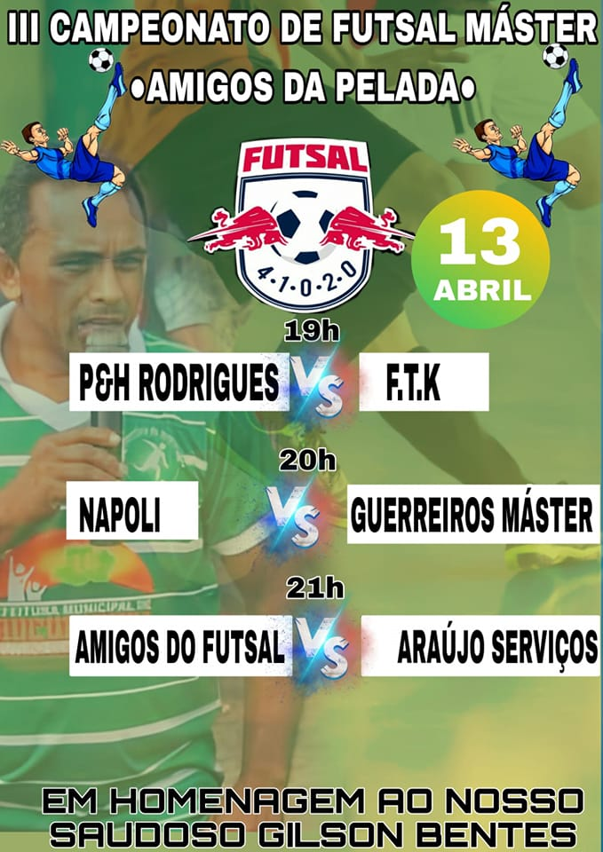
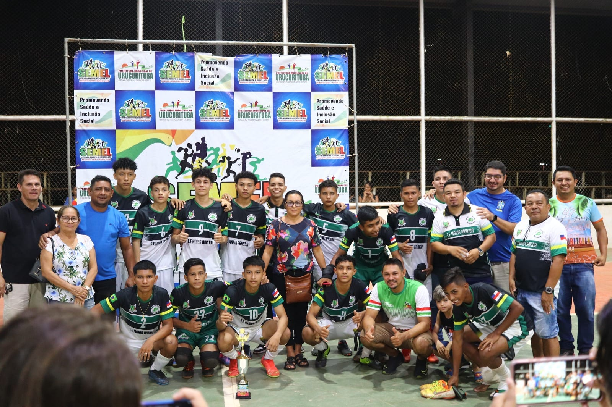

Jogos prometem grandes duelos em quadra!
Os jogos começam nesta quinta-feira, (13), e prometem trazer para as arquibancadas da quadra Manoel grana de Araújo, um grande público de pessoas, haja vista, que o povo da cidade de Urucurituba, é amante do esporte local. Além disso, o III Campeonato de Futsal Master será em homenagem ao saudoso amigo GILSON BENTES, que foi um grande atleta urucuritubense, a qual representou o município em diversos campeonatos. O torcedor que quiser prestigiar o campeonato, deverá se descolar até a Quadra Manoel Grana de Araújo, localizada em frente a câmara municipal de vereadores, no centro da cidade, atrás do prédio da prefeitura municipal. Os jogos começam as 19h com os seguintes jogos de estréia: HORA: 19:00 1ª Rodada: 19h - P&R RODRIGUES X FTK 20h. - NAPOLI X GUERREIROS MASTER 21h. - AMIGOS DO FUTSAL X ARAUJO SERVIÇOS
Urucurituba realiza seletiva interna para JEA's 2023
Jogos do pólo II acontecerão em Itapiranga/AM
De 07 a 13 de maio
A seletiva interna municipal, realiza em Urucurituba, aconteceu entre os dias 9 e 11 de abril, e contou com a participação de atletas de diversas modalidades, representantes das Escolas Estaduais: Maria Arruda e Prof. Armando Kettle (Sede), Esperança (Itapeaçu), Licínio José de Araújo (Urucurituba Velho) e Escolas Municipais: Suzete Tundis (Sede), Hilda Araújo (Urucurituba velho) e Escola Tereza Figueiredo (Itapeaçú). Na modalidade atletismo, o vencendor dos 80 metros rasos infantil masculino, foi Artêmio Pereira, da Creche Municipal Hilda Araújo, correndo pelos 80 rasos, na categoria infantil feminino, em 1º lugar ficou Raissa Fernandes de Souza e em 2º lugar ficou Maria Eduarda da Costa, ambas atletas da Creche Municipal Hilda Araújo. Nos 800 metros rasos infantil masculino, o vencedor foi Rosenildo Pantoja, da Escola Estadual Maria Arruda, nos 800 metros rasos infantil feminino, em 1º lugar ficou Geovana Campelo, da Escola Estadual Maria Arruda e em 2º lugar ficou Estephany Nohueira, da Escola Estadual Prof. Armando Kettle. Pelos 150 metros rasos infantil feminino, em 1º lugar Thalita Cardoso, da Escola Maria Arruda, e em 2º lugar Maria Eduarda da Costa, da Creche Municipal Hilda Araújo. Pelos 2.000 mil metros rasos infantil feminino, em 1º lugar ficou Isabelly Batista Nogueira, da Escola Municipal Suzete Tundis Carvalho, e em 2º lugar ficou Iasmim Baraúna da Silva, da Escola Municipal Suzete Tundis Carvalho. Pela categoria de Lançamento de disco infantil feminino, em 1º lugar ficou Mickellen Paiva, da Escola Municipal Suzete Tundis. pelo Lançamento de dardo infantil masculino, em 1º lugar ficou Victor Gabriel da Cruz. Pelo arremesso de peso infantil feminino, em 1º lugar ficou Raina Vitória Stone, da Escola Estadual Maria Arruda, e em 2º lugar ficou Jaíse da Silva Gomes, da Escola Estadual Maria Arruda. Pelo arremesso de peso infantil masculino, em 1º lugar ficou Murilo Maciel, da Escola Estadual Esperança, e em 2º lugar ficou Rosenildo da Silva, da Escola Estadual Maria Arruda. Pelo salto em altura infantil feminino, em 1º lugar ficou Isabelly Santos da Costa, da Escola Municipal Suzete Tundis, e em 2º lugar Raina Vitória Stone, da Escola Estadual Maria Arruda.